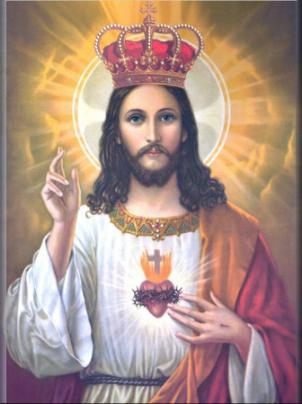

JUÍZO DIVINO
O SENHOR permitiu que Santa Brígida tivesse uma Visão real de um julgamento no Tribunal de DEUS, com esse objetivo ordenou que fossem realizados todos os diálogos que normalmente são suprimidos, em face da Onisciência Divina, das virtudes e dons da MÃE DE DEUS e dos Anjos. Mas foi assim para que ela vendo e ouvindo, pudesse descrever todos os acontecimentos no Livro das Revelações, o qual foi editado por ordem DELE, para conhecimento e benefício da humanidade. São textos fortes e autênticos, alertas vivos para a alma e a vida de quem quer ser feliz aqui na Terra e alcançar o Céu.


Visão do julgamento de uma alma que o demônio fazia gravíssimas acusações; a VIRGEM MARIA a defende, sabendo ter aquela alma alcançado o Amor de DEUS no último instante de sua vida e a salva; mas a alma terá que pagar todos os seus pecados a Justiça Divina no Purgatório.
LIVRO 6 - Capítulo 29
Santa Brígida viu que se apresentou um
demônio no Tribunal de DEUS, que tomava conta da alma de um defunto, 
Respondeu o JUIZ: “Porque esta alma está em suas mãos e porque te aproximastes mais dela do que o Meu Anjoâ€? Respondeu o demônio: “Porque seus pecados foram muito mais do que as suas boas obrasâ€. Disse o JUIZ: “Mostra quais foram os pecadosâ€? Argumentou o demônio: “Tenho um livro com a relação completa de seus pecadosâ€. Inquiriu o JUIZ: “Que nome tem esse livroâ€? Rebateu o demônio: “Seu nome é Falta de Obediência, e nesse livro há sete divisões, como se fossem sete livros, e cada uma das divisões tem três colunas, e cada coluna tem mais de mil palavrasâ€. Falou o JUIZ: “Diga-me os nomes destes livros, porque embora EU saiba o nome deles e o conteúdo, quero que fales, para que as pessoas conheçam a tua malícia e a Minha Bondadeâ€. Respondeu o demônio: “O nome do primeiro livro é Soberba e nele há três colunas; o segundo livro se refere a sua Cobiça; o terceiro é sobre a Inveja; o quarto livro é sobre a sua Avareza; o quinto se refere a sua Preguiça em todos os seus aspectos; o sexto livro é a Cólera, que o fazia se irritar com muita facilidade; o sétimo livro era a sua Sexualidadeâ€.
O JUIZ permaneceu em silêncio enquanto se aproximava a MÃE DE DEUS, que estava mais distante. Ela disse: “Quero disputar com esse demônio sobre a justiçaâ€. JESUS falou: “Amadíssima MÃE, se não se nega a justiça ao demônio, como se poderia negá-la a Ti, que é a Minha MÃE e a SENHORA dos Anjos? Tu pode tudo e tudo sabe em MIM, mas não obstante, fala, para que os outros saibam o Amor que EU tenho por Tiâ€.
Em seguida a VIRGEM MARIA disse ao demônio: “Te mando, diabo, que Me respondas a três coisas, e mesmo que não queiras responder e seja o Meu pedido imposto à força, estás obrigado por justiça, porque sou tua SENHORA. Diga-ME, por ventura, tu conheces todos os pensamentos do homemâ€? Respondeu o demônio: “Não, fico conhecendo somente aqueles que posso julgar pelos comportamentos exteriores das pessoas e por sua disposição em praticá-las, assim como, os pensamentos que eu mesmo lhe sugiro em seu coração, pois ainda que perdi minha dignidade angélica, no entanto, pela habilidade de minha própria natureza, me ficou tanta sagacidade, que pela disposição das pessoas posso entender o estado da sua mente; mas os seus bons pensamentos não podem ser conhecidos por mimâ€.
NOSSA SENHORA lhe disse: “Diga-me, diabo, ainda que seja contra a sua vontade, quem é que pode apagar a escrita em teu livroâ€? Respondeu o demônio: “Nada pode ser apagado nos livros, a não ser o Amor de DEUS; a pessoa que tiver DEUS em seu coração, mesmo sendo um grande pecador, automaticamente se apaga em meu livro muita coisa que estava escrito a respeito deleâ€. A VIRGEM perguntou pela terceira vez: “Diga-me, diabo: há, por ventura, algum pecador tão imundo e tão afastado de meu FILHO que não possa alcançar o perdão enquanto vive a sua existênciaâ€? Satanás respondeu: “Ninguém é tão pecador que, si quiser, não possa alcançar a graça de DEUS enquanto vive. Sempre que alguém, por grande pecador que seja, muda a sua vontade e sua disposição ruim em boa, revela que tem o Amor de DEUS e que quer permanecer nele. Isto acontecendo, todos os demônios não são bastantes para arrancá-lo do bem e levá-lo para o mau caminho novamenteâ€.
Então a MÃE da Misericórdia disse a todos os
presentes: “Esta alma retornou a Mim, no
final de sua vida, e ela Me disseâ€:“Vós sois a MÃE
da Misericórdia e o auxílio dos infelizes. Eu sou indigno de suplicar ao Vosso FILHO,
porque meus pecados são graves e muitíssimos, e de modo audacioso provoquei a ira
DELE, porque amei mais os meus prazeres e o mundo que a DEUS meu CRIADOR. Por isso
eu rogo, tenha misericórdia de mim. Vós que não a negais a ninguém que Lhe peça, e,
portanto, me volto a Vós e prometo, que si viver, quero me corrigir e retornar por
minha vontade ao Vosso FILHO e não amar nenhuma outra coisa senão a ELE. Mas, sobretudo,
me pesa e me arrependo, sinto não ter feito nada para honrar o Vosso FILHO, meu CRIADOR;
assim, rogo, piedosíssima SENHORA, tenha misericórdia de mim, porque a ninguém
senão a Vós tenho para recorrerâ€. NOSSA SENHORA falou:
“Com tais palavras e com este propósito esta alma veio
a Mim, no final de sua vida. Eu pergunto: não devia ouvi-la? Quem, se de todo o coração e
com um firme propósito de se corrigir na sua existência, fazendo uma súplica desta a
outro, não merece ser ouvido? E quanto mais Eu, que sou a MÃE da Misericórdia,
não devo ouvir a todos os que invocam o Meu auxílioâ€?
disseâ€:“Vós sois a MÃE
da Misericórdia e o auxílio dos infelizes. Eu sou indigno de suplicar ao Vosso FILHO,
porque meus pecados são graves e muitíssimos, e de modo audacioso provoquei a ira
DELE, porque amei mais os meus prazeres e o mundo que a DEUS meu CRIADOR. Por isso
eu rogo, tenha misericórdia de mim. Vós que não a negais a ninguém que Lhe peça, e,
portanto, me volto a Vós e prometo, que si viver, quero me corrigir e retornar por
minha vontade ao Vosso FILHO e não amar nenhuma outra coisa senão a ELE. Mas, sobretudo,
me pesa e me arrependo, sinto não ter feito nada para honrar o Vosso FILHO, meu CRIADOR;
assim, rogo, piedosíssima SENHORA, tenha misericórdia de mim, porque a ninguém
senão a Vós tenho para recorrerâ€. NOSSA SENHORA falou:
“Com tais palavras e com este propósito esta alma veio
a Mim, no final de sua vida. Eu pergunto: não devia ouvi-la? Quem, se de todo o coração e
com um firme propósito de se corrigir na sua existência, fazendo uma súplica desta a
outro, não merece ser ouvido? E quanto mais Eu, que sou a MÃE da Misericórdia,
não devo ouvir a todos os que invocam o Meu auxílioâ€?
O demônio respondeu: Nada sei a respeito desse propósito; mas se é segundo dizes, prova-o com razões manifestasâ€. Disse a VIRGEM: “És indigno que Eu te responda, no entanto, porque isto se faz para proveito de outros, vou te contestar. Tu, miserável, falaste que nada daquilo que está escrito em teu livro pode ser apagado senão pelo Amor de DEUSâ€. E voltando-se para o JUIZ a VIRGEM falou: “Meu FILHO, faça que o diabo abra esse livro e leia, e veja se tudo está ali escrito por completo, ou se tem algo apagadoâ€.
Então o JUIZ disse ao demônio: “Onde está teu livroâ€? Respondeu o demônio: “Em meu ventreâ€. O JUIZ falou: “Qual é o teu ventreâ€? Falou o diabo: “Minha memória, porque no ventre está toda imundice e fedor, assim em minha memória está toda perversidade e malícia, que como péssimo fedor cheira em TUA presença. Pois quando por minha soberba me afastei de TI e da TUA Luz, achei em mim toda a malícia, e se obscureceu a minha memória com respeito às coisas boas de DEUS, e ficou nesta memória escrita toda a maldade dos pecadosâ€. Então o JUIZ lhe disse: “Te ordeno, que vejas com esmero e procures em teu livro o que está escrito e se algo foi apagado sobre os pecados desta alma, e diga publicamenteâ€. Respondeu o demônio: “Olho o meu livro, e vejo as coisas escritas de modo diferente do que eu pensava. Vejo que foram apagados aqueles sete livros, divisões do Livro da Falta de Obediência, que eu tinha nomeado anteriormente, e nada resta deles no meu livro, senão atrevimentos e licenciosidadesâ€.
Em seguida o JUIZ disse ao Anjo da Guarda que estava presente: “Onde estão as boas obras desta almaâ€? Respondeu o Anjo: “SENHOR, todas as coisas estão na VOSSA presciência e conhecimento, tanto as presentes, como as passadas e as futuras. Tudo nós conhecemos e vemos em VÓS, e VÓS em nós, nem necessitamos de enumerá-los, porque todos eles VÓS conheceis. Mas porque quereis mostrar o VOSSO Amor, o SENHOR manifesta a VOSSA vontade a quem VOS satisfaz. Desde que no princípio uniu esta alma ao corpo, eu estive sempre com ela, e tenho também escrito um livro de suas boas obras. E se quiseres ver este livro, está em VOSSO poderâ€.
Disse o JUIZ: “Não convém julgar senão depois de ouvir e entender o bem e o mal, a fim de que tudo seja examinado cuidadosamente, a fim de que a sentença proferida represente o equilíbrio da verdade e a justiça, seja para vida ou para a morteâ€. Falou o Anjo: “Meu Livro é denominado Obediência com que ele VOS obedeceu, e nele há sete colunas. A primeira é o Batismo; a segunda é sua Abstinência Jejuando, e se reprimindo das obras ilícitas, nos pecados, e até no prazer da carne e nas tentações; a terceira coluna é a Oração e o Bom Propósito que com respeito a VÓS ele teve; a quarta são os seus Bons Feitos em esmolas e outras obras de misericórdia; a quinta, é a Esperança que em VÓS ele tinha; a sexta, é a Fé que teve como cristão; e a sétima coluna, está o seu Amor a DEUSâ€. Ouvindo isto o JUIZ disse ao Anjo bom: “Onde está teu livroâ€? Ele respondeu:“Em vossa visão e amor, meu SENHORâ€. Então em tom de repreensão, a VIRGEM disse ao diabo: “Como guardaste o teu livro, e como se apagou o que nele estava escritoâ€? E respondeu o demônio: “Ai! Ai! Porque me enganasteâ€.
Em seguida disse o JUIZ a sua querida MÃE: Neste particular a sentença Te foi favorável, e com justiça ganhaste essa almaâ€. O demônio todo nervoso e se movimentando dizia: “Perdi, e fui vencido; mas diga-me, JUIZ: Até quando tenho de ter esta alma por seus excessos e atrevimentosâ€? Respondeu o JUIZ: “EU te manifestarei; os livros estão abertos e lidos. Mas ME diga, diabo, ainda que EU sei de tudo, ME diga se a justiça sob esta alma deve permiti-la entrar ou não no Céu. Permito-te que agora vejas e saibas a verdade da justiçaâ€.
E o demônio respondeu:“É a justiça em si, que se uma pessoa morrer sem pecado mortal, não tomaria as dores do inferno, e quem tem o amor de DEUS, de direito pode entrar no Céu, depois de se purificar dos seus pecados no Purgatórioâ€.
E disse o JUIZ: “Já que te abri ao entendimento e te permiti ver a luz da verdade e da justiça, ME diga para que o ouça quem EU quero (Santa Brígida): qual deve ser a sentença desta almaâ€? Respondeu o demônio: “Que se purifique de tal modo, que nela não fique uma única mancha; porque ainda que por justiça ela TE foi adjudicada, com tudo, está ainda imunda, e não pode chegar a TI, senão após se purificar. E como TU, ó JUIZ, me perguntaste, agora também eu LHE pergunto: Como deve se purificar e até quando tem de estar em minhas mãosâ€? Respondeu o JUIZ: “Mando-te, diabo, que não entres nela, nem a absorvas em ti; mas deves purificá-la até que esteja limpa e sem mancha, pois segundo a sua culpa padecerá sua penaâ€.
SENTENÇA:
De três modos aquela alma pecou na visão, de três modos
no ouvido e de outros três modos pecou no tato. Portanto, a alma deve ser
castigada de três modos. Na visão: primeiro, deve ver e entender todos os
seus pecados e abominações; segundo, deve ver toda a tua malícia; terceiro,
deve ver todas as suas misérias e as terríveis penas das outras almas. Igualmente,
será afligida de três modos no ouvido. Primeiro, ouvirá um horrível “aiâ€, porque
quis ouvir o seu próprio louvor e os encantos do mundo: segundo, deve ouvir os
horrorosos clamores e zombarias dos demônios: terceiro, ouvirá os opróbrios e
as intoleráveis misérias, porque ouviu mais e com mais prazer os amores e os
favores do mundo, do que de DEUS, e serviu com mais empenho ao mundo do que a
seu DEUS.
De três modos também se afligirá no tato. Primeiro, arderá num fogo abrasíssimo interiormente e exteriormente, de maneira que na alma não fique a menor mancha que não seja purificada pelo fogo; segundo, padecerá um imenso frio, porque ardia em sua cobiça e era frio no seu amor a DEUS; terceiro, estará nas mãos dos demônios, para que não tenha nem o menor pensamento nem a mais leve palavra que não seja purificada, até que fique como o ouro, que se apura no crisol e na forja, conforme a vontade de seu dono.
Então perguntou o demônio: “Até quando estará esta alma nesta penaâ€? Respondeu o JUIZ: “Posto que
sua vontade fosse viver no mundo, e era tão grande o seu desejo, que por sua
própria vontade teria permanecido vivendo no corpo até o final dos tempos, esta
pena vai durar até o fim do mundo. A Minha Justiça é que todo aquele que tem o
Amor de DEUS, e com todo empenho ME deseja e aspira estar Comigo, separando-se
do mundo, este sim, a pena dele deve lhe propiciar o Céu, porque as provas e
dificuldades da vida presente serão a sua purificação. Mas o que teme a morte
por causa dos pecados e com medo da intensa pena futura que poderia receber,
e se quiser ter mais tempo para se emendar, este deve ter uma pena leve no
Purgatório. Mas aquele que se esquecendo de MIM, deseja viver até o dia do Juízo,
ainda que não peque mortalmente, contudo, pelo imenso desejo de viver que tem,
deverá ter uma pena perpétua até o Dia do Juízoâ€.
fosse viver no mundo, e era tão grande o seu desejo, que por sua
própria vontade teria permanecido vivendo no corpo até o final dos tempos, esta
pena vai durar até o fim do mundo. A Minha Justiça é que todo aquele que tem o
Amor de DEUS, e com todo empenho ME deseja e aspira estar Comigo, separando-se
do mundo, este sim, a pena dele deve lhe propiciar o Céu, porque as provas e
dificuldades da vida presente serão a sua purificação. Mas o que teme a morte
por causa dos pecados e com medo da intensa pena futura que poderia receber,
e se quiser ter mais tempo para se emendar, este deve ter uma pena leve no
Purgatório. Mas aquele que se esquecendo de MIM, deseja viver até o dia do Juízo,
ainda que não peque mortalmente, contudo, pelo imenso desejo de viver que tem,
deverá ter uma pena perpétua até o Dia do Juízoâ€.
Então disse a piedosíssima VIRGEM MARIA: “Bendito seja, Meu FILHO, por TUA Justiça que é plena de Misericórdia. Ainda que nós o vejamos e saibamos tudo em TI, diga-me, para a inteligência e conhecimento das pessoas, que providência se deve tomar para diminuir tão longo tempo de pena, e qual seria o caminho a seguir para se evitar um fogo tão cruel, e como também poderá esta alma se livrar das mãos dos demôniosâ€. Respondeu o FILHO: “Nada Te posso negar, porque és a MÃE da Misericórdia, e a todos proporciona e procura dar consolo e misericórdiaâ€.
“Três coisas existem e que fazem diminuir tão grande tempo de pena, e que apaga aquele fogo terrível, e também livra a alma das mãos do demônio. A primeira é, se alguém devolve o que ele injustamente tomou (roubou) ou arrancou de outros, ou está obrigado a lhes devolver conforme decisão da justiça e não devolveu; isto porque, a alma deve se purgar, ou pelas súplicas dos Santos, ou pelas esmolas e boas obras dos amigos, ou por uma suficiente e necessária purificação. O segundo, (para compensar a usura da pessoa que tem posse) é uma esmola vultosa, pois através dela se apaga o pecado, como com a água se apaga a sede. O terceiro é a oferenda de Meu Corpo feita por ele no altar (Celebrações de Santas Missas, Confissão Sacramental, Sagrada Comunhão), e as súplicas de Meus amigosâ€.
“Estas três coisas são as que libertarão a alma daquelas três penasâ€. Então disse a MÃE da Misericórdia: E de que lhe servem agora as boas obras que por TI ela fezâ€? Respondeu o FILHO: “Não perguntas, porque o ignores, pois tudo o sabes e vês em MIM, perguntas para ser mostrado aos outros o Meu Amor. Na verdade, a mais insignificante palavra não ficará sem remuneração, também, nem o mais ligeiro pensamento que teve em Minha honra; pois tudo quanto fez por MIM, agora está diante dela e dentro de sua pena, para lhe servir de refrigério e consolo, sentindo menos ardor do que sofreria de outro modoâ€. NOSSA SENHORA perguntou ao seu FILHO: “Por que essa alma está imóvel, como quem não move mãos nem pés contra o seu inimigo e não obstante ela viveâ€?
O JUIZ respondeu: “De MIM escreveu o Profeta, que fui como um cordeiro emudecido diante de quem o tosquiava; e na verdade, EU emudeci diante de Meus inimigos. Portanto, é justiça, que essa alma por não ter tido interesse pela Minha morte e por tê-la considerado sem importância, esteja agora como o menino que nas mãos dos homicidas não fala, permanece em silêncioâ€. Disse a MÃE: “Bendito seja, meu dulcíssimo FILHO, que nada faz sem justiça. Tu disseste Meu FILHO, que esta alma podia ser socorrida pelos seus amigos e pela Igreja (onde rezam TEUS amigos e as pessoas de fé) , e por outro lado, bem sabes que ela me serviu de três modos. Primeiro, com a abstinência, pois jejuava nas vigílias das Minhas Festividades e nelas ela se abstinha em meu nome; segundo, porque lia o Meu Ofício; e terceiro, porque cantava em minha homenagem. E assim, Meu FILHO, já que ouves a TEUS amigos que falam e cantam o TEU Nome na Terra, TE rogo que também TE dignes Me ouvirâ€.
Respondeu o FILHO: Sempre se ouvem com a maior benevolência as súplicas das pessoas prediletas de algum Santo; e como Tu és o que EU mais amo sobre todas as coisas, pede quanto queiras, e Lhe será dadoâ€. Disse a MÃE: “Esta alma padece três penas na visão, três no olvido e três no tato. TE suplico, pois, Meu FILHO Amadíssimo, que lhe diminua uma pena na visão, para que não veja os horríveis demônios, ainda que sofra as outras penas, porque TUA Justiça assim o exige, conforme a Justiça de TUA Misericórdia, a qual não Me oponho. TE suplico, em segundo lugar, que no ouvido diminua uma pena, para que não ouça sua desonra e confusão. Por último, TE rogo que no tato lhe tires uma pena, para que não sinta esse frio maior que o gelo, o qual o merece ter, porque era frio em teu amorâ€. Respondeu o FILHO: “Bendita seja, Amadíssima MÃE, a ti nada se pode negar: faça-se a Tua vontade, e seja, conforme o Teu pedidoâ€. NOSSA SENHORA respondeu: “Bendito seja TU, Meu Dulcíssimo FILHO, pela imensidão de TEU Amor e Misericórdiaâ€.
Naquele instante apareceu um Santo com grande acompanhamento, e disse: “Louvado seja, SENHOR, nosso DEUS, CRIADOR e JUIZ de todos. Esta alma em vida, foi minha devota, jejuou em minha honra, e me louvou fazendo súplicas, da mesma maneira que a estes amigos Vossos que se acham presentes. Assim, pois, suplico por eles e por mim, que tenhais compaixão com esta alma, e por nossas súplicas LHE deis o descanso e uma boa pena, e que os demônios não tenham poder para obscurecer a sua consciência; pois se não lhes contém a fúria, eles irão obscurecê-la de tal modo, que nunca essa alma conseguiria esperar o termo de seu infortúnio e atingir a glória, senão quando fosse TUA Vontade de olhar especialmente para ela com TUA graça. Portanto, piedosíssimo SENHOR, concede-lhe por nossas súplicas, que em qualquer pena que ela receber, saiba positivamente que acabando a pena, conseguirá então, alcançar a glória perpétuaâ€.
Respondeu o JUIZ: “Assim o exige a verdadeira justiça, porque esta alma afastou muitas vezes sua consciência dos pensamentos espirituais e do entendimento das coisas eternas, e quis obscurecer sua consciência, sem temer trabalhar contra MIM, e, portanto, justo é, repito, que os demônios obscureçam a sua consciência. Mas porque vós, Meus amadíssimos amigos, ouvistes as Minhas palavras e as colocastes em obra, não se deve negar nada a vos, e assim farei o que pedisâ€. Então responderam todos os Santos: “Bendito seja, DEUS, em toda a VOSSA Justiça, que julga justamente, e não deixa nada sem castigoâ€.
Em seguida, o Anjo da Guarda daquela alma, disse ao JUIZ: “Desde o princípio da união desta alma com o seu corpo, eu estive com ela, e a acompanhei por providência do VOSSO Amor, e ela, algumas vezes fazia a minha vontade. Por isso rogo SENHOR meu DEUS, tenha compaixão delaâ€. Respondeu o SENHOR: "Sim, está bem; mas a respeito disto, queremos deliberarâ€. Então, disse Santa Brígida, a visão desapareceu.
EXPLICAÇÃO
Esta alma foi de um senhor bondoso e amigo dos pobres, ele e a esposa deram esmolas de vultosas quantias. Ela faleceu em Roma, como tinha anunciado o ESPÍRITO DE DEUS, por meio de Santa Brígida, a quem disse: “Tem entendido que essa senhora regressará a sua pátria, mas não morrerá aliâ€. E assim foi, ela regressou a Suécia e na segunda vez que viajou a Roma, ela morreu e lá foi sepultada.
Continuação da admirável revelação acima. DEUS glorificou a alma que se apresentou em Juízo; e também, uma breve idéia da imensa glória dos Santos.
LIVRO 6 - Capítulo 30
 Quatro anos depois do que foi
dito na revelação anterior, Santa Brígida viu um jovem resplandecente em companhia da
mencionada alma, a qual estava vestida, ainda não com toda a roupa. E o jovem disse ao
JUIZ, que estava sentado no trono, ao redor do qual estavam milhares e milhares de Anjos,
e todos O adoravam por Sua paciência e Amor: “Ó
JUIZ, esta é a alma por quem eu pedia, e VOS me respondeu que queria deliberar a
respeito, mas agora, todos nós presentes, voltamos a implorar a VOSSA Misericórdia em
favor dela. E ainda que todos nós conhecemos o VOSSO Amor, não obstante, por esta VOSSA
Esposa (Santa Brígida)
que ouve e olha tudo isto numa visão, falamos ao estilo dos homens, ainda que as
coisas humanas não tenham nenhuma conexão conoscoâ€.
Quatro anos depois do que foi
dito na revelação anterior, Santa Brígida viu um jovem resplandecente em companhia da
mencionada alma, a qual estava vestida, ainda não com toda a roupa. E o jovem disse ao
JUIZ, que estava sentado no trono, ao redor do qual estavam milhares e milhares de Anjos,
e todos O adoravam por Sua paciência e Amor: “Ó
JUIZ, esta é a alma por quem eu pedia, e VOS me respondeu que queria deliberar a
respeito, mas agora, todos nós presentes, voltamos a implorar a VOSSA Misericórdia em
favor dela. E ainda que todos nós conhecemos o VOSSO Amor, não obstante, por esta VOSSA
Esposa (Santa Brígida)
que ouve e olha tudo isto numa visão, falamos ao estilo dos homens, ainda que as
coisas humanas não tenham nenhuma conexão conoscoâ€.
Respondeu o JUIZ: “Se de uma carroça cheia de espigas de trigo muitos homens, uns depois de outros, pegassem cada qual uma espiga, ir-se-ia diminuindo o número destas espigas; igualmente sucede agora, porque vieram a MIM em favor dessa alma muitas lágrimas e obras de amor; e por tanto, cumprida a justiça, leva-a ao descanso, que nem os olhos podem ver, nem os ouvidos podem ouvir, e que nem essa mesma alma podia pensar quando estava no corpo; descanso onde não há Céu acima nem Terra abaixo, cuja altura não se pode calcular, e cuja longitude é incalculável; onde é admirável a largura, e incompreensível a profundidade; onde está DEUS sobre todas as coisas, fora e dentro, regendo tudo, e tudo o contém, e não está contido em nadaâ€.
Viu-se em seguida, aquela alma subir ao Céu, tão brilhante como uma estrela muito resplandecente toda envolta em esplendor. E então disse o JUIZ, o SENHOR JESUS: “Logo chegará o tempo em que EU vou pronunciar a Minha sentença e fazer justiça contra os descendentes do defunto desta alma, pois como esta geração vive cultivando o orgulho e a soberba quando subir ao Tribunal da Eternidade terá que pagar a Justiça Divina o valor correspondente a mesma soberba e orgulho que cultivam na vidaâ€.